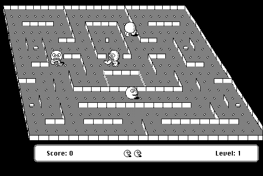

Download
Bachman-208.zip (238K) Bachman 2.0.8 repackaged into a zipped hfs disk image and checksum file. The disk image can be mounted with Mini vMac.
Bachman-208.hqx (344K) Bachman 2.0.8 in the original format.
copyright: Ingemar Ragnemalm
mod date: Aug 30, 2000
license: free for non-commercial use
official url :
Miscellaneous Games by Ingemar Ragnemalm
"Pacman-style game"

If you find these downloads useful, please consider helping the Gryphel Project, which hosts them.
Here are the md5 checksums for the downloads, signed with Gryphel Key 5:
--------- GRY SIGNED TEXT --------- 01e3a6b4ecc3b16883f7f4f325f511b7 Bachman-208.zip 7fb5020c3b8f9610a719143131aebf5f Bachman-208.hqx ------- BEGIN GRY SIGNATURE ------- Gry/4Xa8CFcUzxdN/KiUhkd1o5BeQV2JaIC/Jw2xC/Pl9xiPvTSAAo7ZB9Nu+CBP jY2o/iaBV7cVke+TeYEP/o2fMYbfYv/A9uYxHpY5PpXpNLjS3+FfgvIzP6EYgOO3 qiGUuRLVjd7ZCbrVXzDK+SmJmpBz/HtY8V6NXXgNr/yk+AyDyljP9SsJsiQhb1tH -------- END GRY SIGNATURE --------